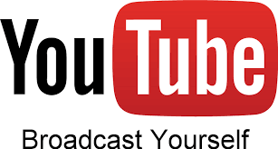
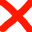

Broadcast yourself!
Op deze pagina staan een aantal tips en tricks van/voor youtubers.
Waarom Youtube?
Youtube is voor iedereen die zichzelf wilt laten zien aan de wereld. Kan jij leuk vertellen over een onderwerp of ben jij heel goed in een bepaalde game? Dan is Youtube wat voor jou! Bedenk maar waarom jij op bepaalde kanalen bent geabonneerd. Als jij kan zien wat zij goed (of minder goed) doen. Kan jij net zo groot worden als dat zij zijn.
Ben ik een goede Youtuber?
Als jij net zo groot wilt worden als EnzoKnol of StukTV, dan moet je er vol voor gaan. In een paar interviews met Youtubers kwamen de volgende punten naar voren die van invloed kunnen zijn op jouw Youtube carriere.
- Video's naar een goede kwaliteit kunnen editen is zeer belangrijk.
- Je moet weten wat je doet, het is leuk als je wat extra's kan vertellen.
- Niemand begint als de perfecte Youtuber, als je een tijdje bezig bent, leer je vanzelf nieuwe dingen over Youtube
- Een planning kunnen aanhouden zorgt voor meer rust en betere kwaliteit van je video's
Ik heb nog geen abbonees. Hoe moet ik beginnen?
Youtube kan een leuke baan zijn als je de juiste keuzes maakt op het begin. Kies om te beginnen een game of onderwerp dat jij leuk vindt om te presenteren. Als je
Youtube écht leuk vindt, kan je later ook games gaan spelen of andere onderwerpen bespreken om uit te proberen. Als je deze onderwerpen dan niet leuk vindt, doe je iets
anders. Verwacht niet te veel van hoe snel je gaat groeien op het begin. Er is te veel competitie in het huidige Youtube tijdperk om echt snel te kunnen groeien. Stel
kleine doelen voor jezelf (Bijvoorbeeld als je nu 500 abonees hebt, verwacht niet volgende maand er 5.000 te hebben.) Er zitten snelle groeiers tussen, maar die hebben
meestal geluk gehad. Je kan jezelf wel een grotere kans geven om te groeien. Als jij extra moeite doet voor je kijkers wordt dit beloond. Het kan ook zijn dat een grote
Youtuber jou opmerkt en dan wilt gaan samenwerken. Als jij jezelf kan blijven en doorzettingsvermogen toont werpt dat ook uiteindelijk zijn vruchten af. Luister niet
naar de haters onder je video's. Zij zijn gewoon jaloers dat jij het lef hebt om te beginnen.
Om te beginnen heb je ook wat informatie en spullen nodig. Beide zijn meestal niet heel moeilijk te verkrijgen. De informatie kan je halen van je favoriete Youtuber
(Wat doen zij dat jij het leuk vind om naar te kijken?) De spullen zijn voor sommigen nog wel een probleem, omdat ze te jong zijn om over veel geld te beschikken en een
goede PC te kopen . Of je bent wat ouder, maar je hebt de financiële middelen niet. Dit kan je oplossen door samen met een vriend of familie lid een kanaal te beginnen.
Zo kan je de kosten delen die een Youtube kanaal met zich meebrengt. Als je een vlogkanaal wilt beginnen, moet je wel beschikken over een camera. Alle mobiele telefoons
hebben tegenwoordig wel een camera ingebouwd. Deze is op het begin goed genoeg. Als je een gamingkanaal wilt beginnen is een leuke accesoire een webcam. Dit is ook een
manier om te laten zien dat je extra moeite doet voor je kijkers.
Hoe kan ik verder groeien op Youtube?
Het is belangrijk om je video's kritisch te bekijken naar wat er beter kan. Vergelijk jouw video's met die van een jouw favoriete Youtuvber. Wat doet hij/zij, wat jij
niet doet of beter kan doen? Ook kan je de mening van je eerste kijkers vragen. Pas hiermee wel op en luister alleen naar kijkers die je al 'kent'. Reageer niet op de
haatcomments. Als je Youtube écht leuk vindt, ga jij toch wel door met Youtube. Als je niet tegen de haat kan, is Youtube misschien toch niet jouw ding.
Als je wilt groeien, is het een idee om jouw kanaal te promoten onder die van andere Youtubers. Zet dan wel een goede reden neer waarom mensen naar jouw kanaal zouden
moeten gaan.
 Fout: "Aboneer op mijn kanaal!",
 Goed: "Zouden jullie op mijn kanaal willen kijken? Ik maak leuke sketches en fifa-gameplay samen met een vriend van mij.Ik wil
volgende maand 100 subs hebben. Ik steek erg veel moeite in mijn kanaal en zou het waarderen als je een kijkje neemt."
Goed: "Zouden jullie op mijn kanaal willen kijken? Ik maak leuke sketches en fifa-gameplay samen met een vriend van mij.Ik wil
volgende maand 100 subs hebben. Ik steek erg veel moeite in mijn kanaal en zou het waarderen als je een kijkje neemt."
Het kan wat haatreacties veroorzaken, maar er zijn genoeg Youtubers groot mee geworden.
Bron: